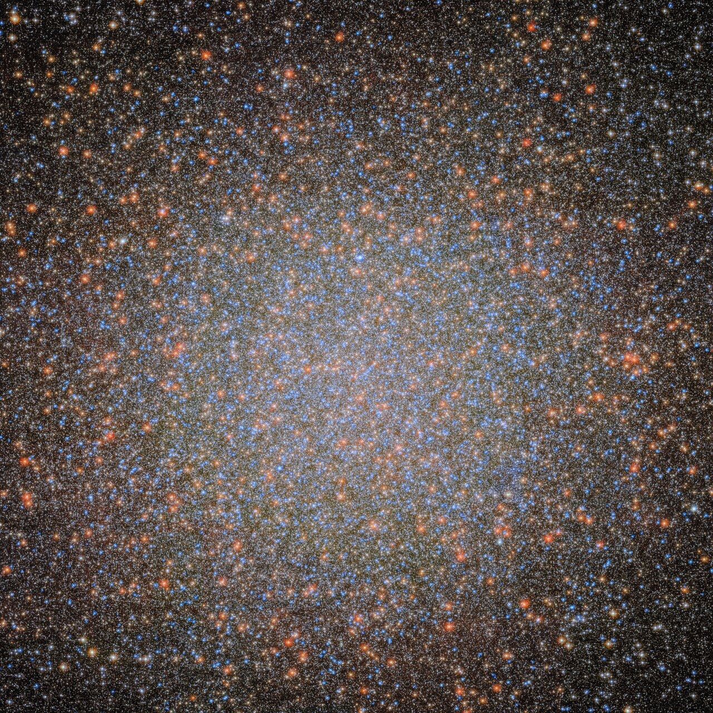
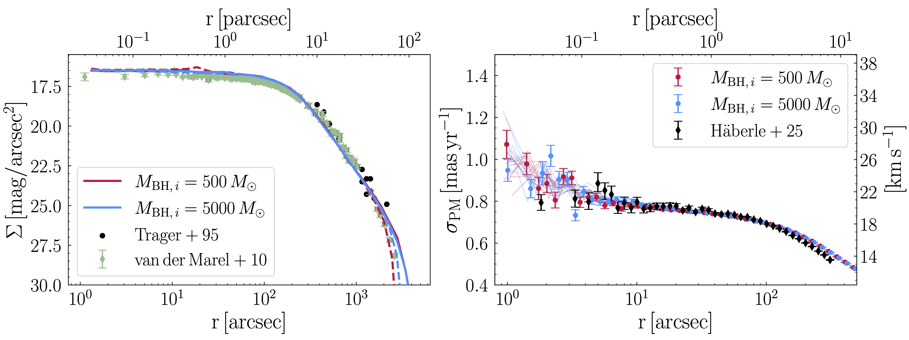
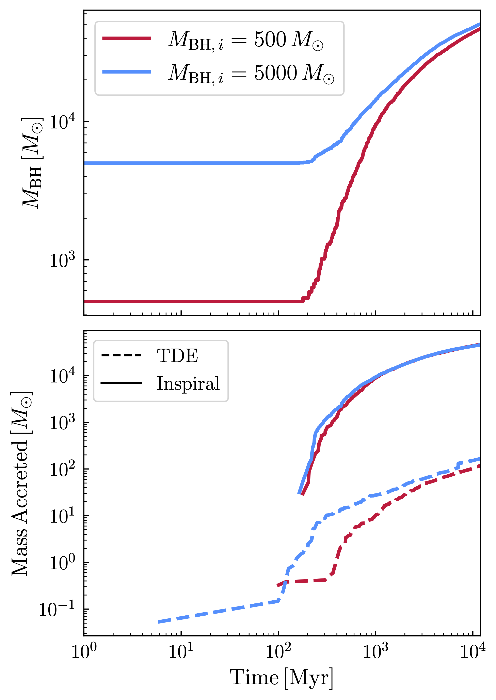
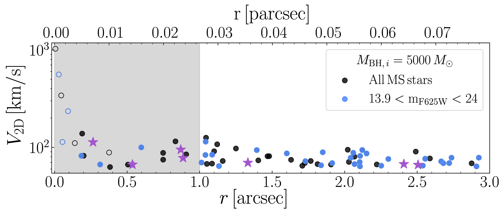

Omega Centauri is the most massive globular cluster in the Milky Way, and likely the stripped nucleus of a dwarf galaxy. Exciting recent observations of fast-moving stars in the core give strong evidence for a central intermediate-mass black hole.

In González Prieto et al. (2025) we modeled ω Cen with the Cluster Monte Carlo (CMC) code, including a detailed treatment of loss-cone dynamics for stars, binaries, and compact objects. We started with black hole seeds of 500–5000 M⊙ — masses consistent with runaway collisions of massive stars — and evolved the clusters for 12 Gyr.
By the present day, the seeds grow to IMBHs of ∼50,000 M⊙. Most of the growth comes from mergers with ∼30–40 M⊙ black holes, as shown in the figure on the right. Crucially, the models successfully reproduce ω Cen’s observed surface brightness and velocity dispersion profiles, shown in the figure below.


The same models predict a population of fast-moving stars similar to those observed in the core of ω Cen. The plot below shows the distribution of fast-moving stars for one of our models as black circles, with those shown in blue indicating stars with 13.9 < F625W < 24, consistent with the observed stellar population reported in Häberle et al. (2024) and shown as purple stars. The empty circles indicate stars that are remnants of a binary disruption. The shaded gray region shows the 1″ uncertainty in the cluster center.
For ω Cen–like clusters today, we estimate an IMBH–BH merger rate of ∼(4–8) × 10−8 yr−1, and a comparable tidal disruption rate of ∼5 × 10−8 yr−1. Depending on how common such clusters are, the predicted TDE rate may account for anywhere from ∼0.1% to ∼10% of the observed rate!
